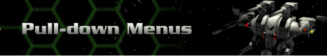

› |
Pull-down Menus |

In addition to keyboard and mouse commands, you can use the five pull-down menus just below the message bar to move around in Cyberstorm.
Battle (only available on missions)
Base (only available while not out on missions)
Units (only available on missions)